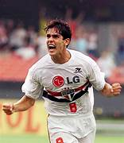

Minha pagina do São paulo
Rogério Ceni é uma das figuras mais emblemáticas do São Paulo Futebol Clube e do futebol brasileiro. Ele é conhecido principalmente por sua carreira como goleiro, sendo considerado um dos melhores da sua posição na história do futebol. Além de suas habilidades defensivas, Ceni se destacou por sua capacidade de marcar gols, algo raro para um goleiro. Ele é o maior goleiro artilheiro da história, com mais de 130 gols marcados ao longo de sua carreira. Ceni jogou pelo São Paulo durante toda a maior parte de sua carreira profissional, de 1997 a 2015. Durante esse período, ele conquistou vários títulos, incluindo três Copas Libertadores (1993, 1994 e 2005) e três Copas do Mundo de Clubes da FIFA (2005, 2006 e 2007). Sua longevidade e lealdade ao clube, assim como suas contribuições tanto na defesa quanto no ataque, fizeram dele uma lenda no São Paulo. Após se aposentar como jogador, Ceni começou uma carreira como treinador, também voltando ao São Paulo em várias ocasiões como técnico. Ele é muito respeitado não apenas pelos torcedores do São Paulo, mas também por admiradores do futebol em geral, pela sua dedicação e impacto no esporte.

Adriano Imperador, cujo nome completo é Adriano Leite Ribeiro, teve uma passagem marcante pelo futebol brasileiro e europeu. Ele é mais lembrado por sua força física, habilidade e chute potente. No entanto, sua carreira foi marcada tanto por grandes conquistas quanto por desafios pessoais. Em São Paulo, Adriano jogou pelo São Paulo Futebol Clube em 2008. Apesar de não ter ficado muito tempo no clube, ele deixou sua marca, ajudando o time a conquistar o Campeonato Brasileiro daquele ano. Além disso, Adriano teve uma carreira de destaque na Europa, principalmente na Inter de Milão, onde viveu o auge de sua carreira. Ele também jogou pela Seleção Brasileira, conquistando títulos importantes como a Copa América e a Copa das Confederações. Adriano é uma figura icônica, tanto pelo seu talento quanto por sua trajetória de vida, que inclui altos e baixos dentro e fora de campo. Ele continua a ser uma figura querida por muitos fãs de futebol, especialmente em São Paulo, onde deixou boas lembranças durante sua breve passagem pelo clube.

Kaká, cujo nome completo é Ricardo Izecson dos Santos Leite, é outro jogador brasileiro que tem uma conexão importante com o São Paulo Futebol Clube. Ele começou sua carreira profissional no São Paulo e se destacou como um jovem talentoso. Kaká jogou pelo São Paulo entre 2001 e 2003, antes de se transferir para o Milan, onde alcançou fama internacional. Durante sua passagem pelo São Paulo, ele foi parte fundamental do time que conquistou o Campeonato Paulista e a Copa São Paulo de Juniores, entre outros títulos. Ele é conhecido por sua habilidade técnica, visão de jogo e elegância em campo. Kaká também teve uma carreira de sucesso na Europa, com destaque para sua atuação pelo Milan e pelo Real Madrid. Além disso, ele foi campeão da Copa do Mundo com a Seleção Brasileira em 2002. Kaká é lembrado com muito carinho pelos torcedores do São Paulo e por muitos fãs de futebol ao redor do mundo.
hino do São paulo
Salve o Tricolor Paulista Amado clube brasileiro Tu és forte, tu és grande Dentre os grandes, és o primeiro Tu és forte, tu és grande Dentre os grandes, és o primeiro Oh, Tricolor Clube bem amado As tuas glórias Vêm do passado Oh, Tricolor Clube bem amado As tuas glórias Vêm do passado São teus guias brasileiros Que te amam ternamente De São Paulo tens o nome Que ostentas dignamente De São Paulo tens o nome Que ostentas dignamente Oh, Tricolor Clube bem amado As tuas glórias Vêm do passado Oh, Tricolor Clube bem amado As tuas glórias Vêm do passado Oh, Tricolor Clube bem amado As tuas glórias Vêm do passado Oh, Tricolor Clube bem amado As tuas glórias Vêm do passado